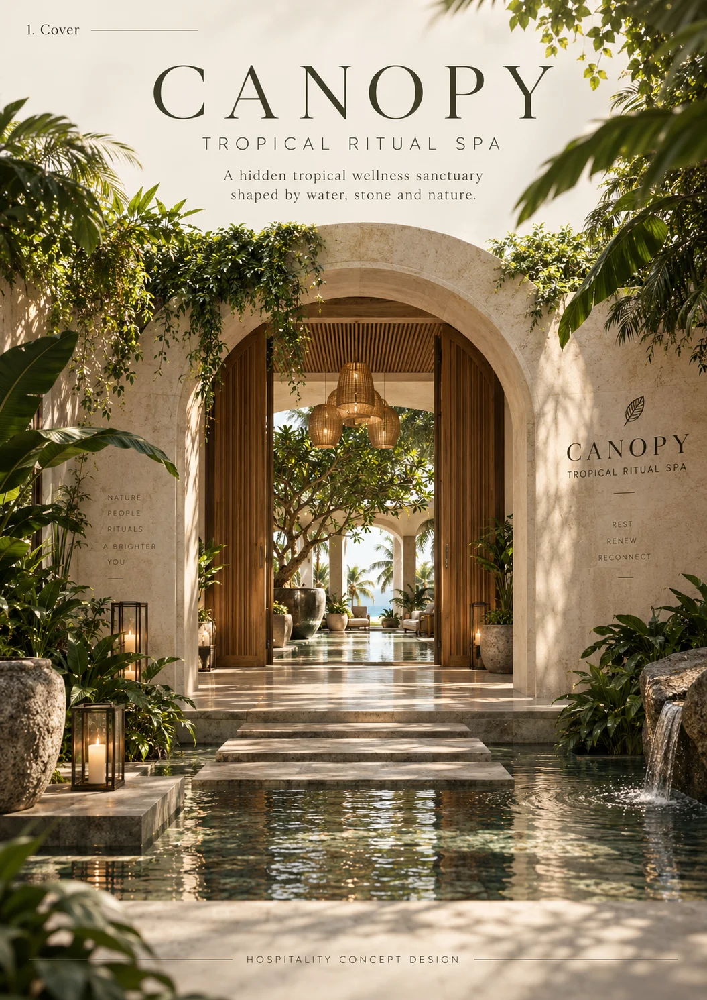
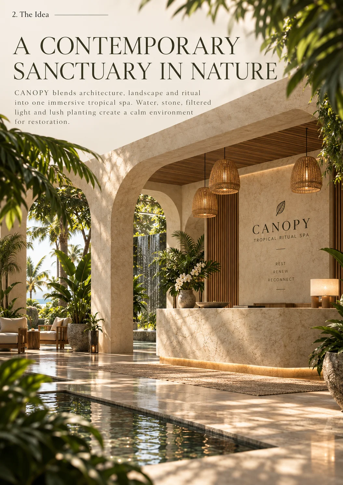
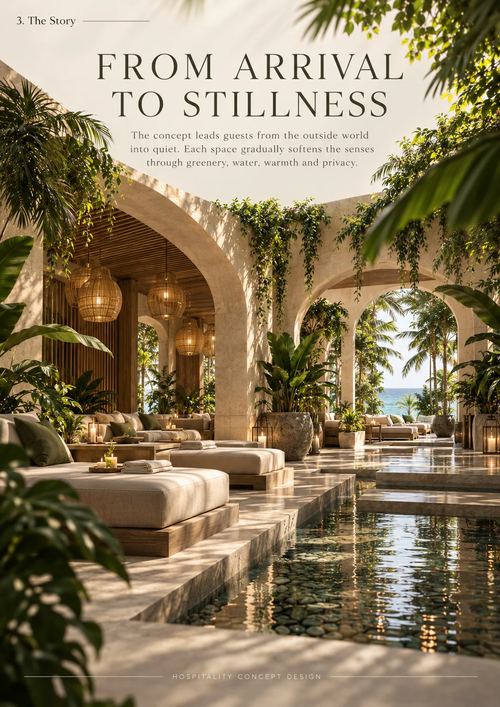
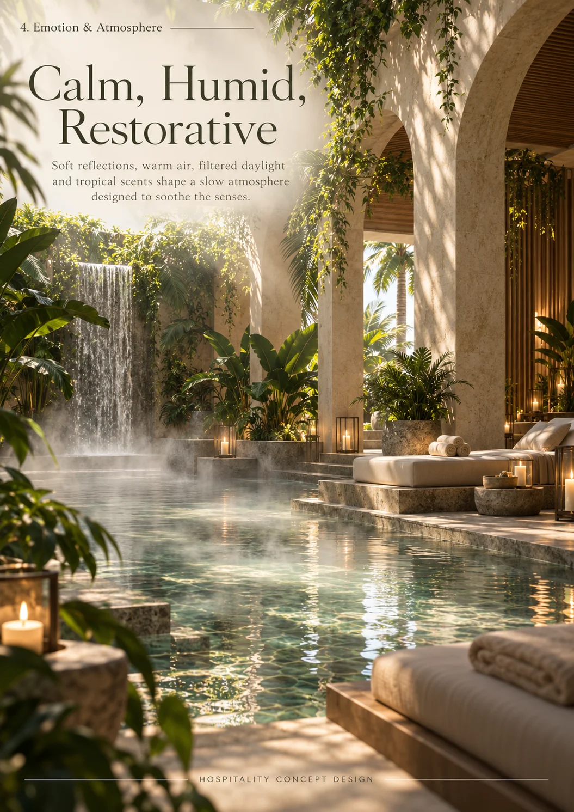
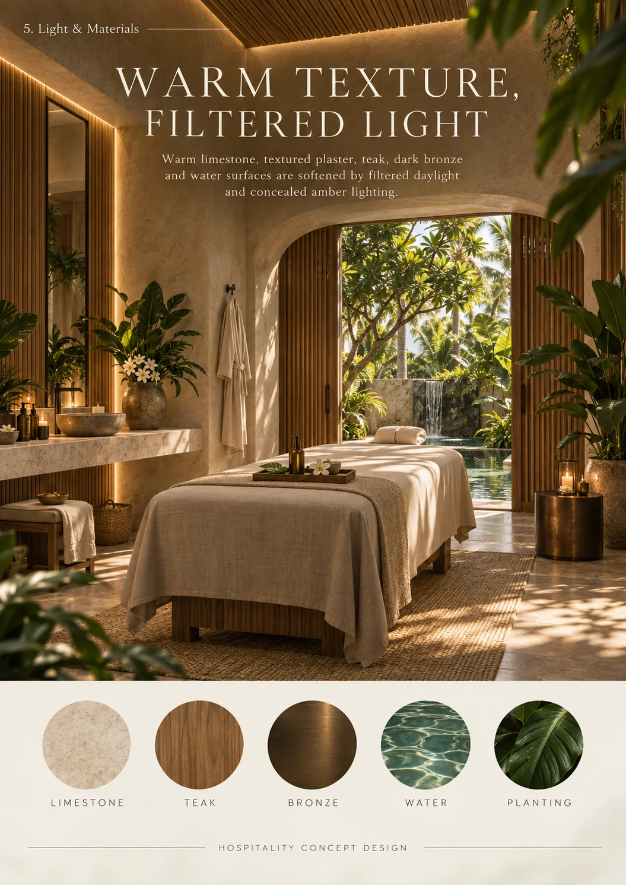
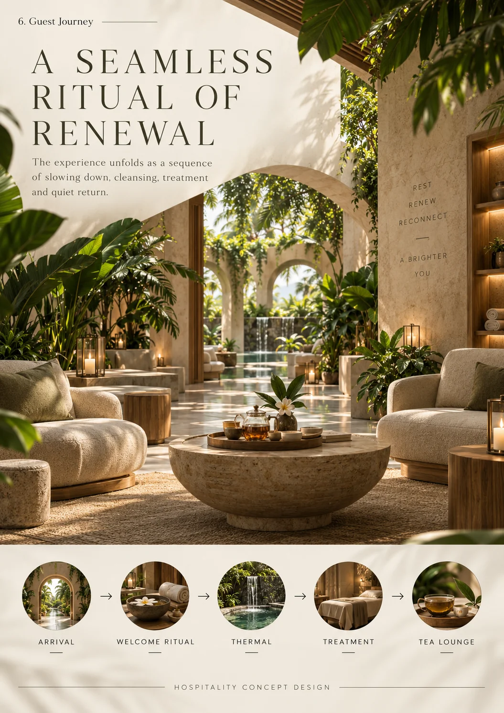
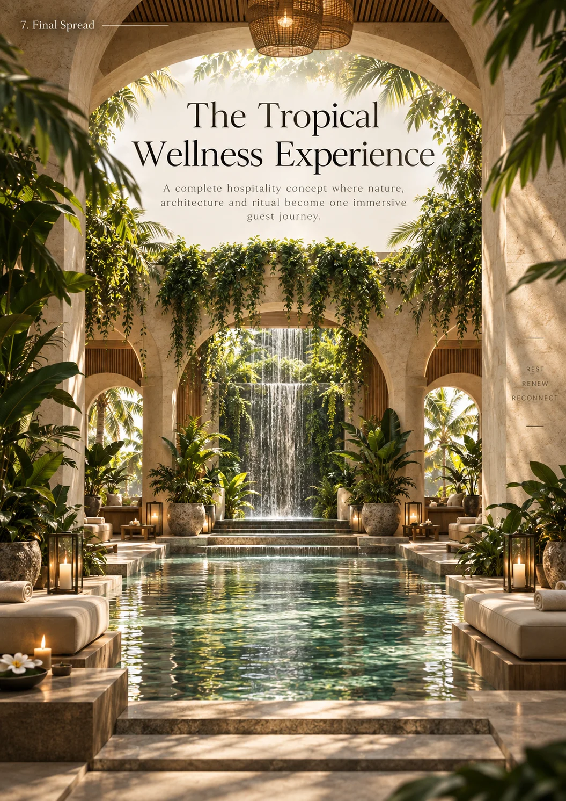

Tropical spa concept
CANOPY
A tropical ritual of stillness and renewal — water, filtered light and architecture beneath the leaves.

CANOPY is a tropical spa sanctuary conceived as a sequence of rituals rather than a facility. Arched pavilions, water channels and open-air treatment rooms sit beneath a living roof of leaves, so the journey from arrival to stillness happens half indoors, half in the garden. The concept explores humidity, shadow and filtered light as restorative materials. Water is the connective tissue — channels, pools and small waterfalls guide guests through the ritual, while warm natural textures keep the atmosphere grounded rather than clinical.
Material direction
Warm natural stone; dark tropical timber; woven rattan and cane; lime plaster; river pebble and terrazzo; linen and cotton textiles; layered living planting. These are concept-stage material directions, with final products and detailing to be developed separately.
My role
Wellness concept design, creative direction, spatial storytelling, guest journey, light and material direction, and concept visualization — Maria Andriiuk.
Concept & story
A canopy is the layer of the forest where light turns soft — and the entire spa is built beneath that idea. Arrival, cleansing, treatment, rest and return are composed as a gradual descent into stillness, each stage a little quieter, a little greener, until only water and leaves remain.
Emotion & atmosphere
The intended mood is calm, humid and restorative. Filtered green light, the sound of moving water and warm tactile surfaces work together to lower the body’s pace. The atmosphere is designed to feel held by nature rather than separated from it.
Light & material direction
Light arrives through leaves, screens and reflections on water — never direct. Warm accents in the treatment rooms, underwater pool lighting and grazing light on stone complete the palette after dark. Timber, rattan and lime plaster keep every surface touchable. Technical lighting and final specifications would be resolved during further design development.
Guest journey
01 / Arrival — An arched entry over water, into the shade of the garden. 02 / Cleansing — A water channel leads past the first pools. 03 / Treatment — Open-air rooms wrapped in planting and warm texture. 04 / Rest — The waterfall pool, where the ritual slows to stillness. 05 / Return — Back through the canopy, at a different pace.
Project scope
This self-initiated, unbuilt concept is presented through eight boards covering the idea, story, atmosphere, light and materials, guest journey and final composition. Concept imagery communicates the creative direction. Measured planning, construction documentation, engineering and site delivery are outside this concept study.

Cover — An arched entry over still water: the threshold of the sanctuary.Open full size ↗
The idea — A contemporary sanctuary in nature, built from shade and water.Open full size ↗
The story — From arrival to stillness: water channels connect the ritual spaces.Open full size ↗
Emotion & atmosphere — Calm, humid, restorative: the waterfall pool as the ritual’s centre.Open full size ↗
Light & materials — Warm texture and filtered light in the treatment rooms.Open full size ↗
Guest journey — A seamless ritual of renewal, mapped from arrival to return.Open full size ↗
Final spread — The tropical wellness experience: pool, waterfall and pavilion in one composition.Open full size ↗